01 title — 첫 화면

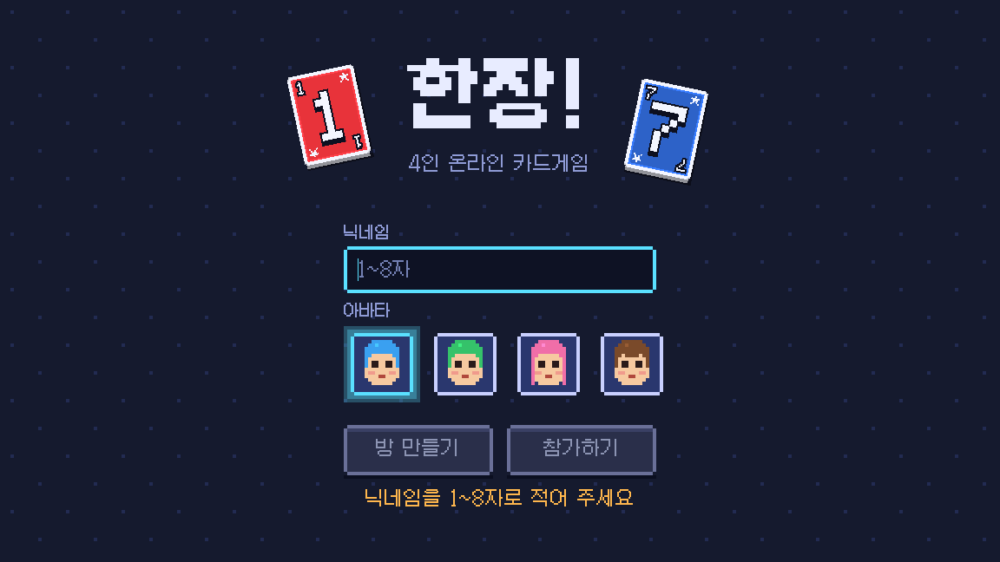
02 join — 참가 화면

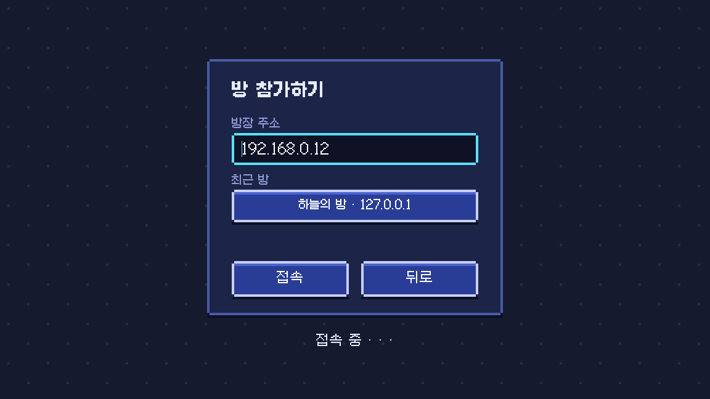
03 lobby — 대기실 (네 번째로 들어온 창)

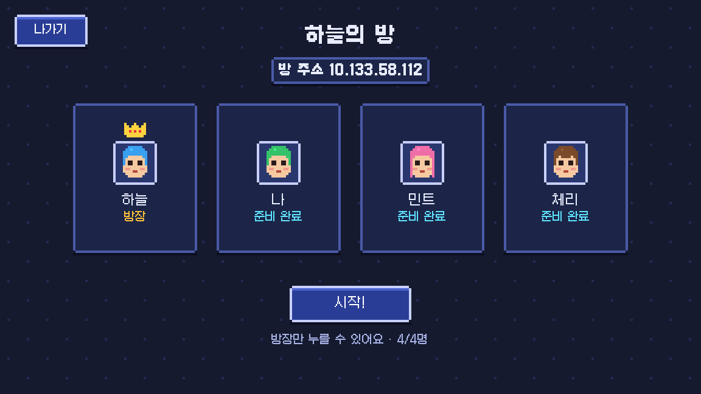
04 deal — 나눠 주기

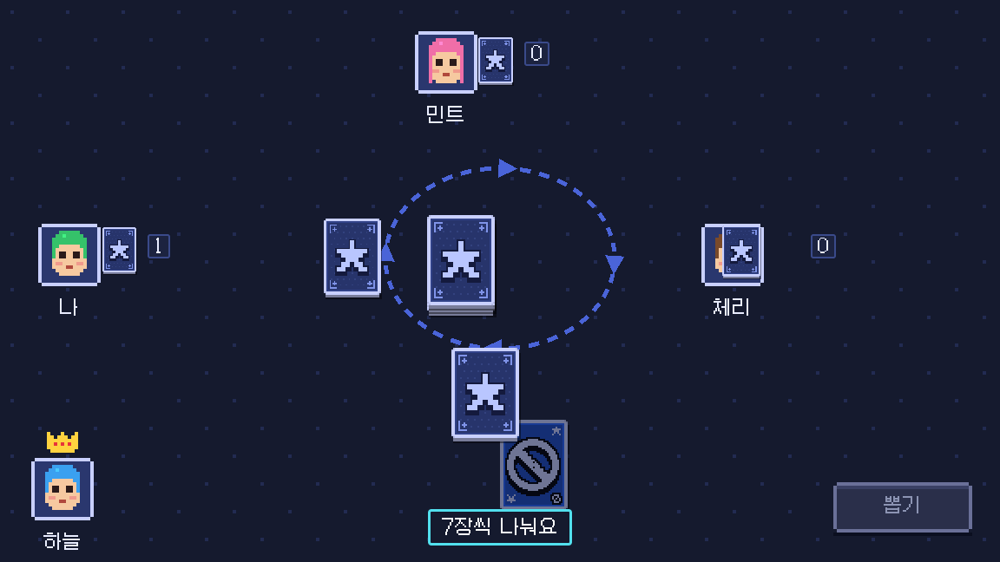
05 my-turn — 내 차례

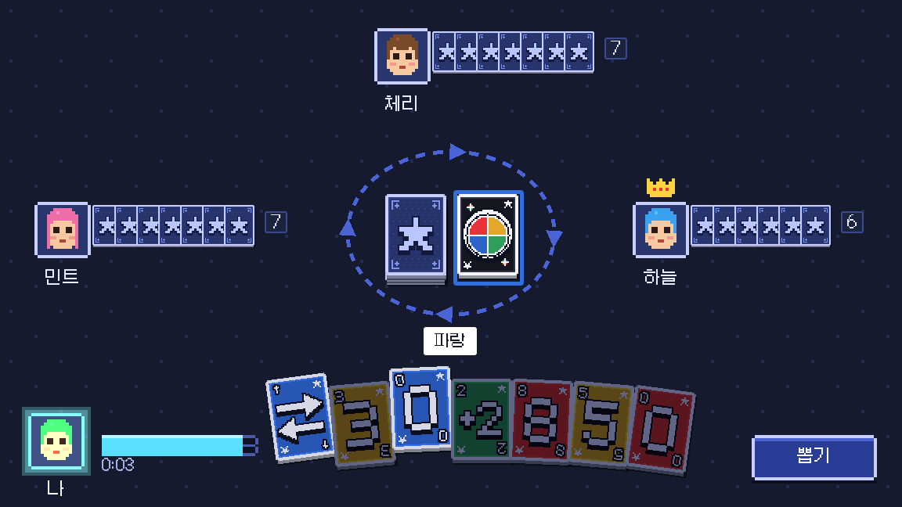
06 play-fly — 내가 카드를 냄

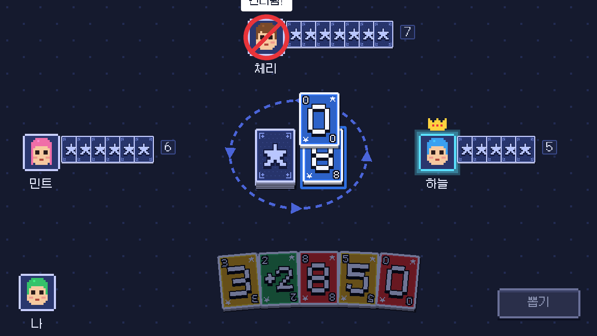
07 opponent-play — 상대가 카드를 냄

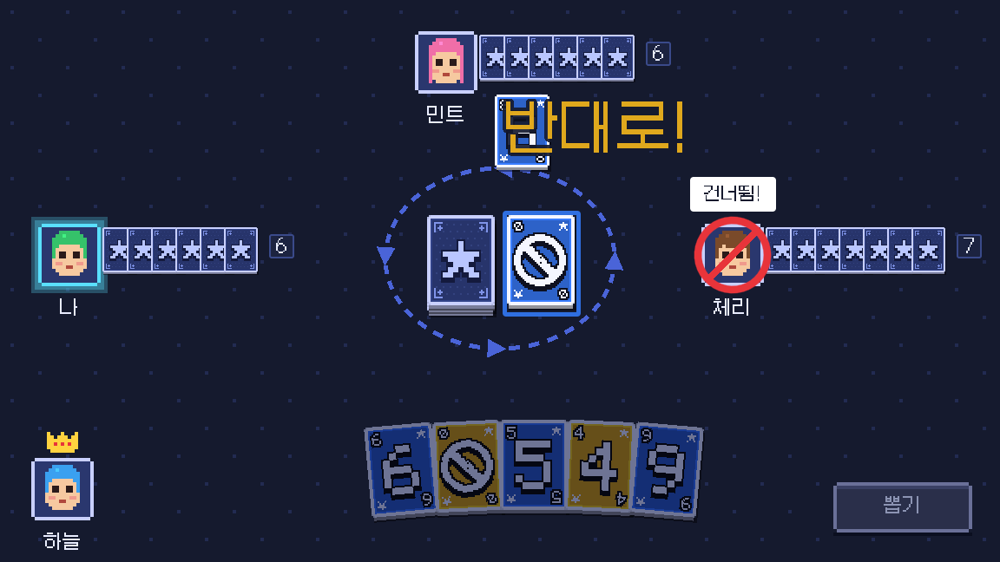
08 wild-picker — 와일드 색 고르기

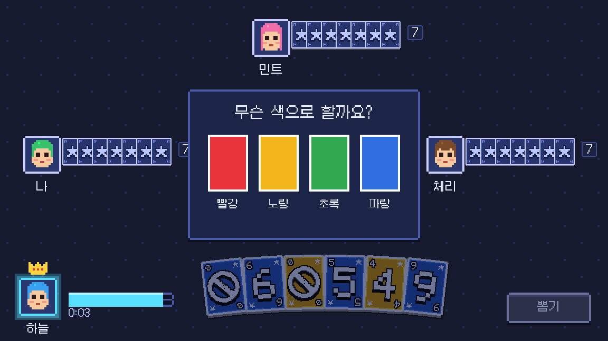
09 attack — 공격 카드

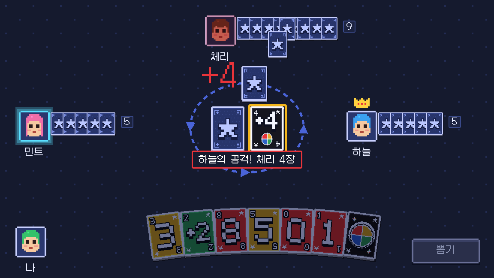
10 skip — 스킵

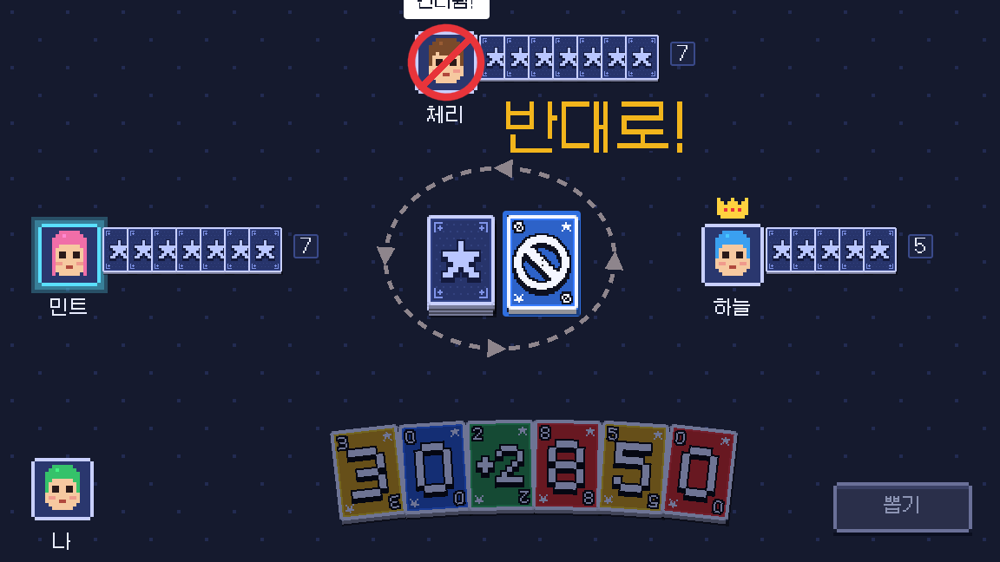
10b reverse — 리버스 (스토리보드 10에 같이 있음)
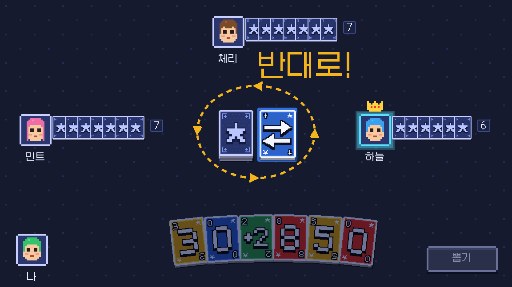
11 draw-choice — 뽑은 카드 고르기

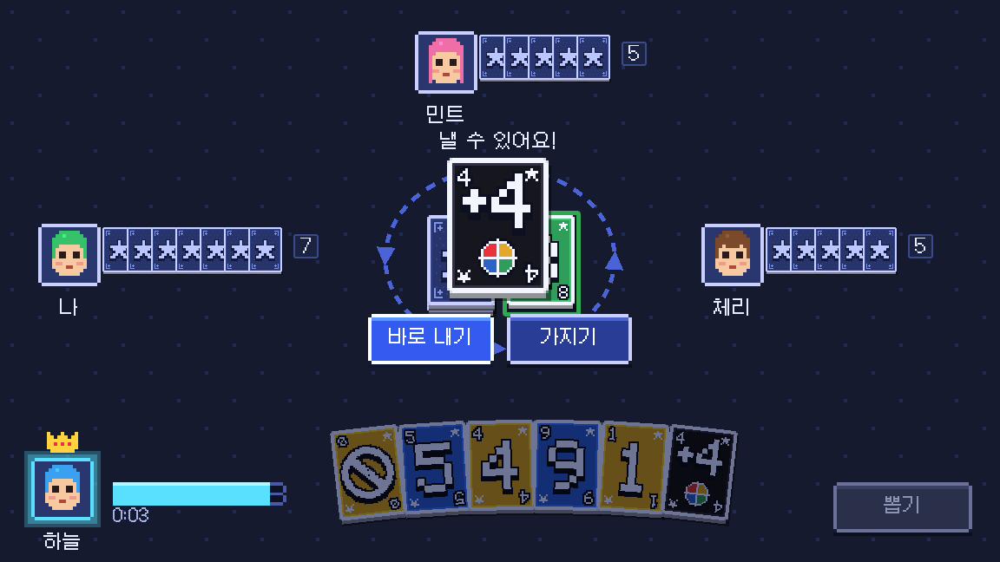
12 hanjang — 한장! 외치기

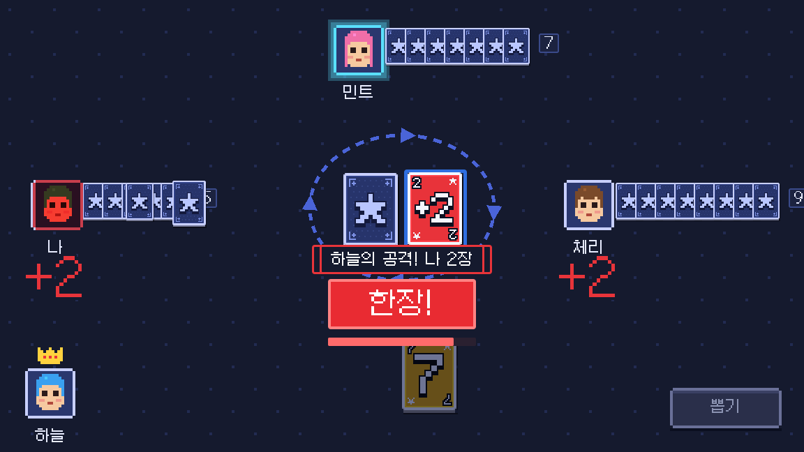
12b called — 한장! 외침 알림
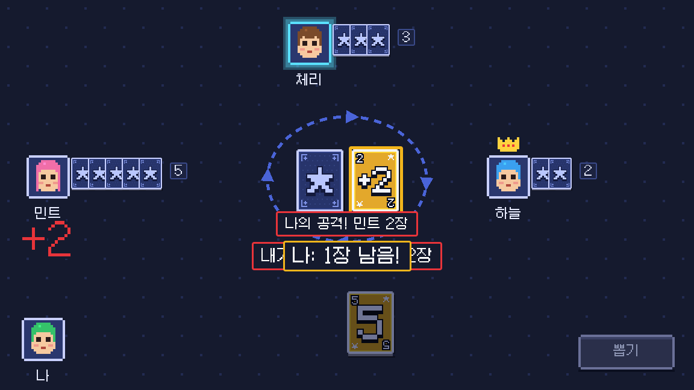
12c catch-button — 잡았다! 버튼
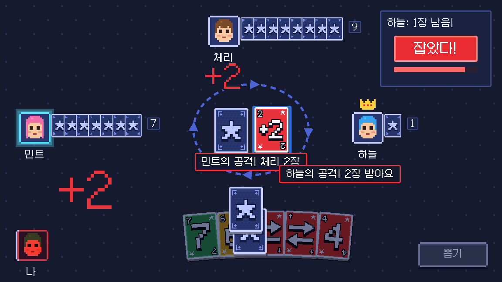
12d caught — 잡았다! 결과
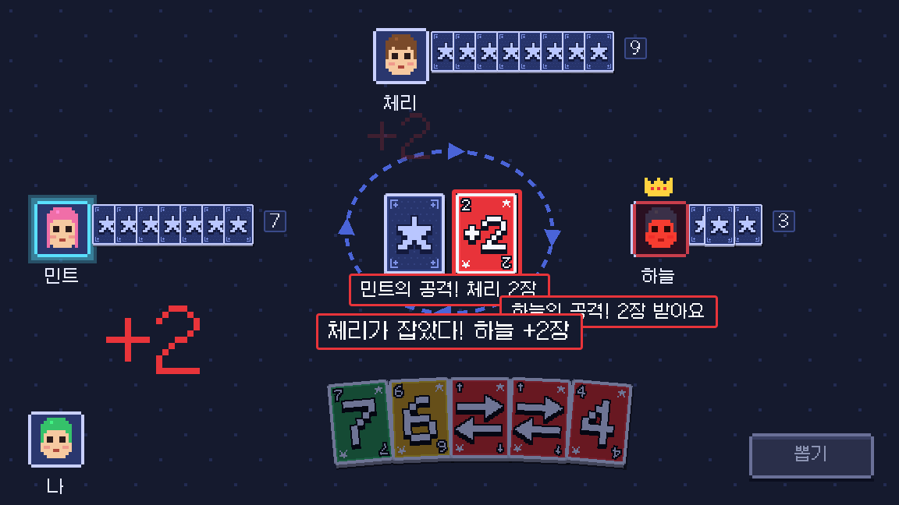
13 result — 결과 (방장 창)

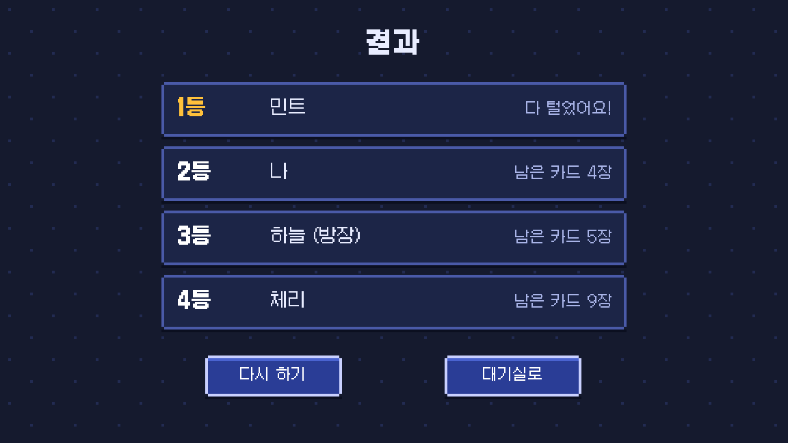
14 disconnect — 접속 끊김

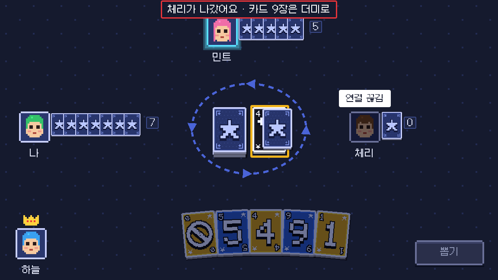